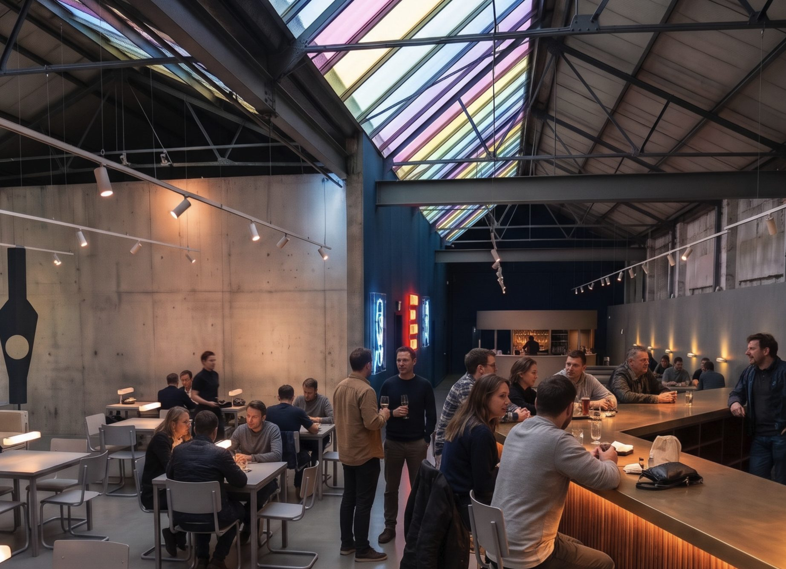

Lichtconcept voor een restaurant in een brouwerij
Colour Boost is mijn afstudeerproject aan de Lighting Design Academy. Voor dit project ontwikkelde ik een lichtconcept voor zowel de binnen- als buitenruimte, inclusief lichtberekeningen in DIALux en 3D-visualisaties.
Wanneer wit daglicht door een prisma valt, wordt het gebroken in verschillende kleuren. Dit natuurlijke verschijnsel vormt de basis van het zichtbare lichtspectrum, zoals we dat ook kennen van een regenboog. Deze bijzondere werking van licht en kleur vormde de inspiratie voor het ontwerp. De natuurlijke elementen sluiten aan bij de ambachtelijke producten en de speelse, ongedwongen sfeer van de locatie.
In een voormalige industriële hal in Amsterdam komen een brouwerij, restaurant en ruim terras samen. Een plek waar vrienden, bier, eten, kunst en muziek samenkomen. Kleurrijk, levendig en no-nonsense. Het lichtplan versterkt dit karakter. Door kleurfilters toe te passen in de daklichten ontstaat een verrassend kleurenspel op de vloer, waarbij het invallende daglicht gedurende de dag voor een steeds veranderende beleving zorgt.
Door een wisseling van eigenaren is het ontwerp helaas niet gerealiseerd. Met dit ontwerp heb ik de opleiding wel met een mooi resultaat afgerond.
Daglicht dat door gekleurde daklichten valt: een natuurlijk effect van kleur, speels en ongedwongen.
3D-visualisaties
Uit het ontwerpproces
Van zones, concept en schetsen naar het lichtplan voor binnen en buiten, en lichtberekeningen van de hal in DIALux.